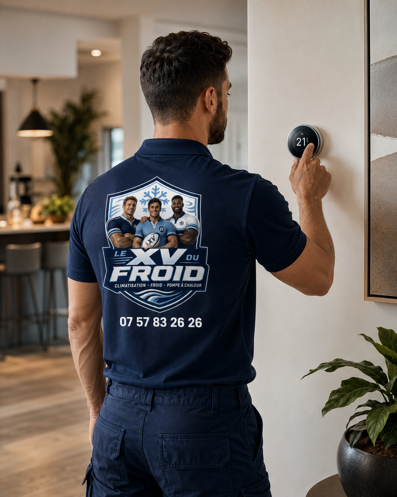

Installation climatisation Mantes-la-Jolie · Yvelines (78)
Installation de climatisation à Mantes-la-Jolie.
Installateur de climatisation à Mantes-la-Jolie et dans le Mantois pour logement collectif, maison, commerce de centre-ville et local professionnel. Étude réelle avant devis, pose propre, essais complets.
- Étude sur place
- Devis détaillé
- Essais à la mise en service
Mantes-la-Jolie · 78200
Mantes-la-Jolie : un bassin de vie où la clim sert aussi le quotidien.
Située à l’ouest des Yvelines, Mantes-la-Jolie est une ville de plus de quarante mille habitants, avec un centre commerçant près de la collégiale, de grands ensembles résidentiels, des maisons individuelles et un tissu d’activités tertiaires. Le besoin de fraîcheur y est réel les étés chauds, surtout dans les logements en étage.
- Surface, volume, orientation et isolation
- Emplacement possible du groupe extérieur
- Voisinage, copropriété, accès et condensats
- Essais, réglages et conseils d’utilisation
Installation climatisation Mantes-la-Jolie
Beaucoup d’appartements, des étages exposés.
Une grande part du parc est composée d’immeubles collectifs : logements traversants ou mono-orientés, derniers étages sous toiture-terrasse, balcons plein sud. Dans ces configurations, une unité bien placée change réellement le confort d’été, mais la copropriété doit en général être consultée avant toute pose.
Nous avons l’habitude de travailler dans des immeubles collectifs : protection des communs, horaires compatibles avec le voisinage, évacuation des condensats qui évite d’arroser le balcon du dessous. Le chantier reste discret, c’est une exigence de départ.
Mantes-la-Jolie est aussi une ville de passage : gare, commerces, services, professions de santé. Les locaux professionnels y demandent une clim régulière, silencieuse et facile à entretenir, plus qu’un équipement flambant neuf.
Appartement en étage : balcon, loggia et copropriété.
Dans un immeuble, le choix du groupe extérieur dépend du règlement : certains autorisent le balcon, d’autres imposent un emplacement précis. Nous cherchons la solution la moins visible et la moins bruyante pour les logements voisins.
- Accord de copropriété et plan d’implantation
- Évacuation des condensats sans gêner l’étage inférieur
- Pose rapide avec protection des parties communes
Contraintes du lieu
Les points à vérifier avant de poser dans le Mantois.
Dans le collectif : règlement, droits de passage, état de la façade, emplacement du groupe. Dans les maisons : mur d’appui, distance au voisin, accès à la toiture ou au garage pour les liaisons.
Dans les locaux professionnels : alimentation électrique disponible, horaires de fonctionnement, présence de public. Une fois ces éléments posés, le choix du système devient simple et défendable.
Choix du système
Quel système pour quel type de logement ?
Pour un trois-pièces, un multi-split desservant séjour et chambres évite de multiplier les groupes sur la façade. Pour un studio ou un deux-pièces, un mono-split est souvent la solution la plus économique et la plus simple.
Dans une maison avec étage, nous regardons d’abord l’étage où l’on dort : c’est lui qui subit la chaleur nocturne en été. Un appareil dans la chambre principale améliore parfois davantage la nuit qu’une unité dans le salon.
- Mono-split : studio, deux-pièces, chambre sous toit ou bureau.
- Multi-split : appartement familial avec séjour et deux chambres.
- Console : séjour ou bureau où le mural est difficile.
- Réversible : complément de chauffage sur une pièce isolée.
Recherches précises
Ce que recherchent les Mantais.
Les recherches locales vont de la clim d’un appartement au dernier étage au cabinet médical de centre-ville, en passant par la maison avec véranda. Nous étudions chaque demande avant de chiffrer.

Cabinets, commerces et bureaux du Mantois.
Un cabinet médical, une agence ou un commerce de centre-ville doit proposer un accueil agréable toute l’année. Nous visons une température stable, une diffusion sans courant froid direct et un matériel facile à entretenir.
- Dimensionnement selon fréquentation et équipements
- Diffusion douce près des places assises
- Entretien annuel planifié dès la mise en service
Méthode
Notre méthode pour une installation à Mantes-la-Jolie.
À Mantes-la-Jolie, la visite prépare aussi la logistique : stationnement, accès en immeuble, horaires du gardien ou du syndic. C’est ce qui permet une pose fluide, sans surprise le jour J.
En fin de chantier, nous testons chaque mode, vérifions l’évacuation et expliquons l’usage de la télécommande, y compris les réglages d’économie d’énergie.
Prix et devis
Un devis clair, adapté à votre immeuble ou à votre maison.
Le prix dépend du nombre de pièces, de la puissance, de la longueur des liaisons, des percements nécessaires, de l’accès au point de pose et de la nature du support extérieur.
Chaque ligne du devis correspond à une opération précise : matériel, pose, raccordement, évacuation, mise en service. Rien n’est caché dans un forfait flou.
FAQ
Questions fréquentes : climatisation à Mantes-la-Jolie.
Peut-on installer une clim en appartement à Mantes-la-Jolie ?
Oui, sous réserve du règlement de copropriété et d’un emplacement adapté pour le groupe extérieur. Nous analysons la configuration avant d’établir un devis.
Quel est le meilleur système pour un trois-pièces ?
Un multi-split à trois unités est fréquent, mais un mono-split dans la chambre la plus chaude peut suffire. Tout dépend de l’orientation et de l’usage.
Votre intervention couvre-t-elle tout le Mantois ?
Nous intervenons à Mantes-la-Jolie, Mantes-la-Ville et dans les communes voisines, selon la nature du chantier.
Installez-vous des clim dans les cabinets médicaux ?
Oui. Nous veillons à une température stable, une diffusion douce et une hygiène facilitée par un entretien régulier.
Combien de temps faut-il pour installer une clim ?
Un mono-split se pose en général dans la journée. Un multi-split peut demander plus de temps selon l’accès et les percements.
Pouvez-vous reprendre une ancienne installation ?
Oui, après diagnostic. Selon l’état du groupe et la compatibilité, nous proposons un remplacement partiel ou complet.
Secteurs couverts
Installation climatisation dans tout Mantes-la-Jolie.
Nous couvrons Mantes-la-Jolie et ses quartiers : centre-ville, Gassicourt, Val Fourré, bords de Seine, ainsi que Mantes-la-Ville voisine. Les modalités d’accès et de pose varient selon l’adresse.
Demander une étude à Mantes-la-JolieMaillage utile
Pages proches et guides utiles.
À lire aussi : installation climatisation Poissy, installation climatisation Rambouillet, toutes nos zones d’intervention, choisir la puissance d’une climatisation, entretien d’une climatisation.
Transparence
Un devis clair avant toute intervention.
Vous savez ce qui est prévu, pourquoi c’est nécessaire et à quel tarif avant que le technicien commence. Puis contrôles et essais avant son départ.